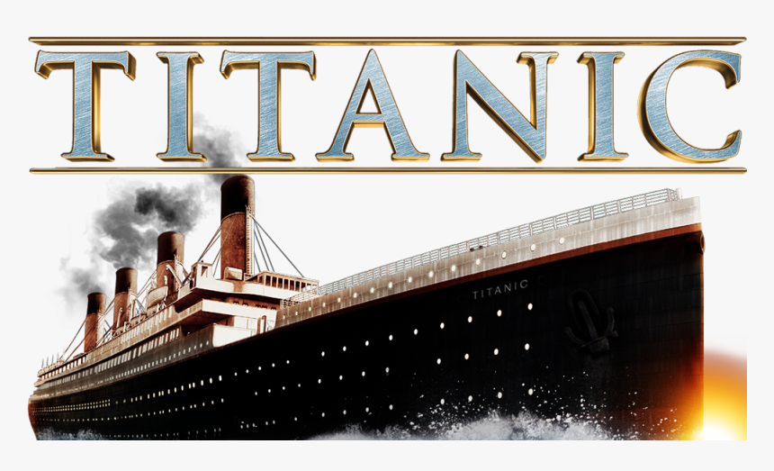

Would You have survived the Titanic

The RMS Titanic sank in the early morning hours of April 15, 1912, after colliding with an iceberg in the North Atlantic late the previous evening. The Titanic was four days into her maiden voyage having left Southhampton, UK on April 10, and picking up passengers in Cherbourg Harbour, France and Queenstown, Ireland. After departing Queenstown, the Titanic was at about 50% capacity as it carried 2,435 souls, including 892 crew members and 1,320 passengers.
It took less than three hours after the collision for the ship to sink, and it was a result of both engineering and human errors. From an engineer’s perspective there were material failures as well as design flaws. Upon collision, the hull steel and wrought iron rivets failed due to brittle fracture. The more brittle a material, the more likely it will break rather than flex. Conditions that contribute to brittle fracture in structured materials include high force of impact, low temperature, high sulfur and oxygen content, and high impact loading. All of these factors were present and contributed to the failure. Recovered pieces of the hull showed no evidence of deformation, and evidence of shatter. Design flaws also contributed, as the compartment hulls were only separated to water level, therefore only watertight when the ship was horizontal. As water poured into the six damaged compartments, the weight of the water caused the ship to pitch forward, allowing water to spill over to adjacent compartments. Additionally, the additional weight in the fore (the front, facing the bow) was countered by the heavy propellers off the stern (back). These weights on opposite ends caused the ship to have downward force on both ends causing the ship to crack into two separate pieces at an expansion joint near midship.
Human errors prior to collision made the impact unavoidable. The seas were calm, and the sky was overcast, causing low visibility. Waves could not be seen crashing against the ice, and crew did not have the aid of starlight. Reflections and mirages due to these conditions impacted the ability to recognize obstacles. The northerly route and the high velocity were both dangerous choices under the conditions. Too much emphasis was put on showing how quickly the ship could traverse the Atlantic, rather than safety. By attempting to avoid the collision by turning away from the iceberg, the impact took place along the starboard side and compromised six compartments. A head-on collision would have resulted in a slower intake of water. It could have allowed the pumps to remove water at a rate that prevented sinking, or at least allowed more time for ships to arrive to rescue passengers and crew before the ship was lost. It has often been said the insufficient space on lifeboats was a design flaw from arrogance that the RMS Titanic was unsinkable. However, this was a common practice, as lifeboats were intended to ferry passengers to rescue ships and return to ferry more until all passengers and crew had left the damaged ships. In the case of the RMS Titanic, her running mate, the Oceanic, was delayed and was not in proximity at the time, therefore unable to render aid.
Visualizations
Select a graph for detailed analysis.


The Team
Arnaz Alavi
role description
Ratika Chauhan
role description
Jo Isaac
role description
Jenifer Puszczewicz
role descriptionr
Joe Rutili
Role Descriptionn